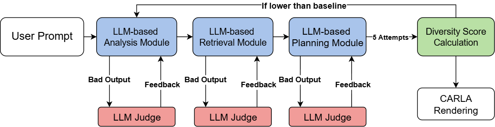
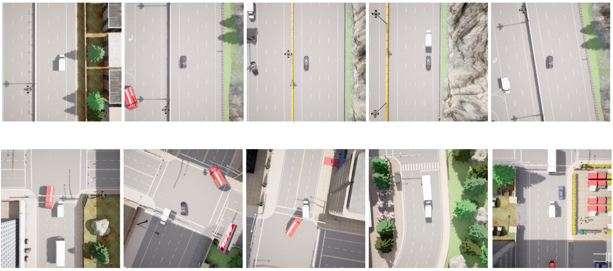

Overview
This thesis work investigates how smaller, open-source LLMs can serve as effective judges in an automated feedback loop for traffic scene generation. Rather than relying on large proprietary models, the system demonstrates that properly configured judge models can enhance retrieval performance, mitigate syntax inconsistencies The evaluation loop with diversity score metric increases the diversity of scenarios generated, addressing a persistent challenge in the autonomous vehicle testing domain.
Research Context
Conducted as part of my Master's thesis at Universität Potsdam in collaboration with
Continental Automotive (now Aumovio),
This thesis work demonstrates how modern NLP techniques can be applied to safety-critical applications in autonomous vehicle testing and validation.
Built upon the TTSG framework
and utilizing the CARLA simulator
for rendering and validation, the system bridges the gap between natural language descriptions and executable traffic scenarios.
(Note: The code repository developed for this project is proprietary and belongs to Aumovio (Continental Automotive), and therefore cannot be made publicly available.)
Framework Architecture
The overall framework integrates multiple components to create an intelligent traffic scene generation system. The architecture combines retrieval mechanisms, LLM-based evaluation, and iterative refinement to produce high-quality traffic scenarios.
Technology Stack
Judge Model's Impact on Retrieval
Using CodeLlama 13B as the main model and Llama-3 8B and GPT-mini o4 as judge models, the system evaluates and guides the retrieval process to ensure relevant map layouts are successfully generated.

Evaluation Loop Results
The implementation of the evaluation loop demonstrated significant improvements in scenario diversity. The iterative feedback mechanism successfully increased the diversity score across multiple metrics:
| Main Model | GPT-4o | GPT-4o | mini-o4 |
|---|---|---|---|
| Eval Loop | FALSE | TRUE | TRUE |
| Weather | 0.80 | 0.67 | 0.72 |
| Daily Traffic | 0.79 | 0.85 | 0.82 |
| Blocking | 0.75 | 0.90 | 0.53 |
| Cut Off | 0.60 | 0.72 | 0.83 |
| Crushing | 0.50 | 0.70 | 0.82 |
| Intersection | 0.83 | 0.68 | 0.69 |
| Emergency | 0.50 | 0.67 | 0.8 |
| Two Wheels | 0.714 | 0.56 | 0.8 |
| Overall | 0.685 | 0.719 | 0.75 |
Example: Emergency Scenario
To visualize the impact of the evaluation loop, we examined an emergency case scenario. The comparison below shows how the framework evolved the scenario generation before and after implementing the evaluation loop, demonstrating improved complexity, realism, and edge case handling.
Key Findings
- Judge Model Efficiency: Demonstrated that effective LLM judges don't require large, proprietary models—smaller open-source models can provide reliable evaluation when properly configured
- Retrieval Enhancement: LLM judges significantly improved the retrieval module's performance, ensuring more relevant and accurate map layouts were selected for scenario generation
- Cross-Module Impact: Analysis output success in one module (such as retrieval) had cascading positive effects on downstream modules, highlighting the importance of early-stage quality control
- Diversity Through Iteration: The evaluation loop successfully increased agent diversity across scenarios, with measurable improvements in edge case coverage and scenario variety
Future Directions
- Enable LLMs to produce complex dictionary structures and data outputs without relying on pre-existing available data, allowing for more flexible and generalized scenario generation across diverse domains and traffic conditions
- Explore multi-agent LLM systems for more comprehensive evaluation capabilities
- Deepen integration with simulation environments for real-time testing and validation
- Investigate fine-tuned domain-specific judges to further enhance evaluation accuracy and consistency across safety-critical automotive applications